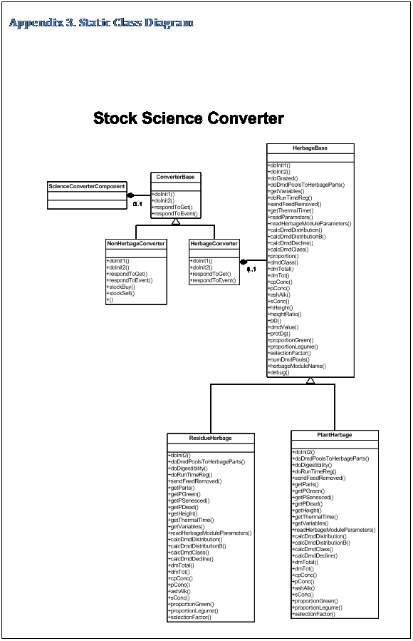

The Stock Science Converter APSIM module provides science conversions between the Ausfarm-Stock component and APSIM modules. This is done on an as-needed basis, converting incompatible data names, units and structures, translating events and transforming data to fit the science model. Compatible data communications occur directly between Ausfarm-Stock and APSIM modules.
The Stock Science Converter (Converter) must handle a number of two-way conversions. The stock can eat herbage from a number of sources within the field, such as multiple APSIM crops and surface organic matter. This requires the respective herbage sources being identified and the herbage stored into pools of digestibility classes. After the stock have eaten and removed herbage from these pools, the appropriate amounts must be removed from each of the herbage sources. To handle this, the APSIM module containing the herbage is represented to the stock by a copy (instance) of the converter. For example, suppose lablab is on offer as a herbage pool in the module APSIM-lablab. An instance of the converter, named cattlelablab, would represent APSIM-lablab to Ausfarm-Stock, acting as an intermediary or translator between the two modules.
Another set of conversions relate to the herd of stock in the field, which include management and the return of organic and inorganic matter to the field through excreta. These conversions are independent of the herbage sources and here the Converter interacts with the appropriate APSIM modules, such as SoilN, SurfaceOM and Manager. In this case, another instance or copy of the Converter handles these whole of herd conversions e.g. cattleconverter.
To achieve these different conversions, the Converter has two major components, non-herbage and herbage.
The non-herbage component services the whole of herd information not directly related to herbage, such as return of excreta components, management events for buy, move and sell and data translation such as daylength.
The herbage component services information directly related to grazing of APSIM crops and surface organic matter. Because the data relating to each is different, the herbage component consists of two sub-components, plant and surfaceOM. The plant and surfaceOM sub-components service the removal of herbage and residues by the stock module from the plant and surface organic matter modules respectively.
Plug-n-Play simulation architectures such as APSIM provide the framework and protocol for data exchange between modules. This facilitates the adaptation of other models by providing an APSIM communications protocol interface and creating a system boundary to the model that aligns with the system boundaries of the APSIM modules it communicates with.
APSIM uses a common modelling protocol which allows components from other systems using the same protocol to be plugged into APSIM without modification, such as AusFarm components, one being a Stock component.
Models adapted to the APSIM environment sometimes have different system boundaries and more commonly their science communication is not compatible with other APSIM modules. This incompatibility is often in the form of data content, data units, data structure or events which can be corrected by converting the science each way. One approach would be to enclose the module in a wrapper which would provide a complete interface between the module and the APSIM system, thus hiding the modules interface from other APSIM modules. The approach taken here is to provide a science converter module which interacts with the introduced module and other APSIM modules on an as-needed basis, thus only providing conversions for the incompatible data. This approach relies on the names of the incompatible data being different to data names and events elsewhere in the system.
The Stock Science Converter APSIM module provides science conversions between the Ausfarm-Stock component and APSIM modules. This is done on an as-needed basis, converting incompatible data names, units and structures, translating events and transforming data to fit the science model. Compatible data communications occur directly between Ausfarm-Stock and APSIM modules.
The Stock Science Converter (Converter) must handle a number of two-way conversions. The stock can eat herbage from a number of sources within the field, such as multiple APSIM crops and surface organic matter. This requires the respective herbage sources being identified and the herbage stored into pools of digestibility classes. After the stock have eaten and removed herbage from these pools, the appropriate amounts must be removed from each of the herbage sources. To handle this, the converter represents the sources with instances of itself, each instance representing a herbage source provided to the stock e.g. cattlelablab.
Another set of conversions relate to the herd of stock in the field, which include management and the return of organic and inorganic matter to the field through excreta. These conversions are independent of the herbage sources and the Converter interacts with the appropriate APSIM modules, such as SoilN, SurfaceOM and Manager. Another instance of the Converter handles these whole of herd conversions e.g. cattleconverter.
To achieve these different conversions, the Converter has two major components, non-herbage and herbage.
The non-herbage component services the whole of herd information not directly related to herbage, such as return of excreta components to surface organic matter, soilN and soilP, management events for buy, move and sell and data translation such as daylength.
The herbage component services information directly related to grazing of APSIM crops and surface organic matter. Because the data relating to each is different, the herbage component consists of two sub-components, plant and surfaceOM. The plant and surfaceOM sub-components service the removal of herbage and residue by the stock module from the plant and surface organic matter modules respectively.
The Stock Science Converter APSIM module provides science conversions between the Ausfarm-Stock component and APSIM modules. This is done on an as-needed basis, converting incompatible data names, units and structures, translating events and transforming data to fit the science model. The module is instantiated once for the non-herbage conversions and then for herbage conversions for each crop being grazed.
Non-herbage component
The non-herbage component services the information not directly related to herbage, such as return of excreta components to surface organic matter, soilN and soilP, management events for buy, move and sell and data translation such as daylength.
When an add_excreta event is received from the stock module, the converter extracts the urea N and phosphate P from the urine component of the excreta and deposits a nominated fraction of the amounts into the top layers of soilN and soilP modules. Currently, the sulphate S and ash alkalinity amounts are ignored.
The converter extracts the faeces_om component and sends an add_surfaceom event along with the organic matter component. The SurfaceOM module receives this event and adds the DM etc to its pools.
Buystock, sellstock and movestock events received from the manager module are sent on to stock as buy, sell and move events respectively with reconstructed parameters.
Herbage component
The herbage component services information directly related to the actions of stock on APSIM plant and surface organic matter. The Herbage component exchanges data with the stock module and instantiates a sub-component (herbage model) for either plant or surfaceom (surface organic matter) interactions. This sub-component exchanges data with plant or surface organic matter modules and carries out the appropriate translations between stock and herbage science
When the Herbage component receives a request from stock for plant2stock data, it fills this property with data from the herbage model and sends it to stock.
When the Herbage component receives a Remove_herbage event, it gives the associated data about quantity of herbage removed to the herbage model.
Plant sub-component
The plant sub-component (herbage model) services the removal of herbage by the stock module from the plant module. It identifies the crop it interacts with and represents to stock by the herbage_module_name property.
When its parent Herbage component requests herbage data, it obtains the dry weights from the nominated crop, for green and senesced material, along with the associated N, P and digestibility. It then transforms the science to that of stock and gives this data to the Herbage component.
When its parent Herbage component passes the herbage removed by the stock, it transforms this data to plant science form and sends it as deltas with a remove_crop_biomass event to the crop it represents. A trampling effect is calculated and sent with a detach_crop_biomass_rate event to the crop for detachment of senesced leaf.
Conversion of plant science to stock science consists of
· distributing the plant part dry-weights over six digestibility class pools defined by the minimum, maximum and average digestibilites of each plant part. The distribution is calculated using a bell shaped polynomial, with the average digestibility determining the class with the highest proportion of dry-matter and the minimum and maximum digestibilities determining the highest and lowest digestibility classes (Freer et al, 1997; Freer et al, 2003).
As plant parts are distributed into the stock digestibility class pools, a record of the proportions of each plant part put into each class pool is kept. The plant part dry-weights and these proportions are then used to calculate the contribution of each plant part to each digestibility class pool. These contributions are then used to distribute the herbage removed from the six digestibility class pools into the plant part deltas. The assumption is that all plant parts in a digestibility class pool are removed or grazed proportionally to their contribution to that pool.
Seeds (meal and oil) are distributed into two digestibility classes (ripe/unripe) (Moore, 2005). The crop stage is used to determine the class, so at and after maturity the seeds are put into the ripe class, otherwise they are stored in the unripe class.
· For each digestibility class pool, calculating crude protein (Cp) concentration from the N content and a Cp:N ratio.
· For each digestibility class pool, calculating phosphorus (P) concentration if P is not available from the plant module, using a default N:P ratio.
· For each digestibility class pool, calculating sulphur concentration using a default N:S ratio.
· For each digestibility class pool, calculating protein degradability as dry-matter digestibility + 0.1 (Moore, pers. com.).
· For each digestibility class pool, calculating ash alkalinity, using default values if it is not available from the plant module.
· For each digestibility class pool, calculating the height ratio, an index of the bulk density of the herbage (Moore, pers. com.).
Surfaceom sub-component
The surfaceOM sub-component services the removal of residue by the stock module from surface organic matter module.
Freer M, Moore AD & Donnelly JR (1997). GRAZPLAN: decision support systems for Australian grazing enterprises. II. The animal biology model for feed intake, production and reproduction and the GrazFeed DSS. Agricultural Systems 54, 77-126.
Freer M, Moore AD & Donnelly JR (2003). The GRAZPLAN animal biology model for sheep and cattle and the GrazFeed decision support tool. CSIRO Plant Industry Technical Paper, September 2003.
Moore AD, Donnelly JR & Freer M, (1997). GRAZPLAN: decision support systems for Australian grazing enterprises. III. Pasture Growth and Soil Moisture Submodels, and the GrassGro DSS. Agricultural Systems 54, 77-126.
Moore AD (2005). Component Description – Stock. Internal document, March 2005.
The components can be described in terms of properties and events. Properties and events can be described in terms of published and subscribed with properties additionally having initialisation and owned.
- Initialisation properties are parameters read at the start of the simulation.
- Owned properties are owned by the module. These properties are passively available to other modules.
- Published properties and events are owned by the module. These properties and events are actively sent to the system.
- Subscribed properties and events are those the module requires to start. These properties are actively sought from the system when needed while these events are passively received and acted upon.
StockScienceConverter
Properties - Initialisation
Conversion_model (nonherbage/herbage) – instantiates a nonherbage or herbage component.
Non-herbage
· Properties
o Initialisation
· Debug (on/off) - for producing detailed daily information in summary file.
· stock_module – simulation name of stock module
· fraction_urine_added – fraction of excreted urine added to soil. The remainder is assumed to be dropped at shade and watering points.
· fraction_faeces_added - fraction of excreted faeces added to surface organic matter. The remainder is assumed to be dropped at shade and watering points.
o Owned
· Daylength (hr) – daylength including civil twilight for use by stock (Moore, 2005).
o Published
· Dlt_urea (kg/ha) – adds Urea N excreted in urine to soilN.
· Dlt_labile_p (kg/ha) – adds phosphate P excreted in urine to soilP.
o Subscribed
· Day_length (hr) daylength including civil twilight
· Urea – to obtain number of layers in urea profile for publishing dlt_urea
· Labile_p - to obtain number of layers in P profile for publishing dlt_labile_p
· Events
o Published
· Buy – sends a buy event to stock (Moore, 2005).
· Sell – sends a sell event to stock (Moore, 2005).
· Move – sends a move event to stock (Moore, 2005).
· Add_surfaceom – adds faeces drymatter with its N, P, S content and ash alkalinity to surface organic matter.
o Subscribed
· Buystock – event from the manager to buy stock. Parameters are the same as for the buy event.
· Sellstock – event from manager to sell stock. Parameters are the same as for the sell event.
· Movestock – event from manager to move stock. Parameters are the same as for the move event.
· Add_excreta –event from stock describing excretion of faeces and urine (Moore, 2005).
Herbage
· Properties
o Initialisation
· Debug (on/off) - for producing detailed daily information in summary file.
· herbage_model (plant/ surfaceom) – instantiates a plant or surfaceom sub-component.
· Events
o Subscribed
· Remove_herbage – event from stock describing removal of herbage and seeds (Moore, 2005).
· Properties
o Owned
· plant2stock – description of feed on offer for use by stock (Moore, 2005).
· herbage_trampling – trampling factor by stock for reporting.
· dm_feed_on_offer – drymatter array of feed on offer to stock in each of the 6 herbage digestibility classes and 2 seed digestibility classes, for reporting.
· dm_feed_removed – drymatter array of feed removed by stock in each of the 6 herbage digestibility classes and 2 seed digestibility classes, for reporting.
· dmd_avg_feed_removed – weighted average drymatter digestibility of feed removed by stock.
o Subscribed
· Trampling – obtained from stock as trampling effect on herbage (Moore, 2005; Moore et al, 1997). Currently receiving 0. NEEDS FIXING
Plant
o Properties
· Initialisation
· Debug (on/off) - for producing detailed daily information in summary file.
· herbage_module_name (lablab/wheat/…) – identifies the crop this instance represents to stock. This allows multiple instances representing multiple crops in the system.
· Owned
· dm_parts_removed – array of drymatter grazed from each plant part, for reporting. In order of green (leaf, stem, pod, meal, oil) and senesced.
· Subscribed
· For each plant part (Leaf, Stem, Pod, Meal, Oil), green and senesced drymatter (GreenWt, SenescedWt) along with the N and P content (GreenN, SenescedN, GreenP, SenescedP) and digestibilities (digestibility_max_dm_green/senesced, digestibility_avg_dm_green/senesced, digestibility_min_dm_green/senesced)
· Stage and stage_name – from plant, used to determine seed class (ripe/unripe)
· Height – from plant, used to calculate height ratio for herbage description in plant2stock property (Moore, 2005).
o Events
· Published
· remove_crop_biomass – event to plant describing the drymatter of each plant component removed.
· detach_crop_biomass_rate – event to plant describing the fraction of senesced material to detach from trampling (Moore et al, 1997).
· Subscribed
Surfaceom
o Properties
· Initialisation
· Published
· Subscribed
o Events
· Published
· Subscribed
The plant sub-component (herbage model) initialises with the following parameters located in the StockScienceConverter.ini file.
- dmdValue
This is set to six digestibility classes into which the herbage is classified. Usually 0.8, 0.7, 0.6 0.5, 0.4, 0.3.
- specific_detach_rate
Daily detachment rate of senesced herbage due to trampling by stock. Set to 0.000002 (ha/kg animal/day) (Moore et al, 1997)
- proportion_legume
This is the proportion of legume in this herbage. Usually 0.0 or 1.0
- dmd_seed
The digestibility of unripe and ripe seed. Usually 0.80, 0.80 (Moore, pers. com.).
- seed_class
Equivalent digestibility class for concurrence with selective grazing of herbage classes - 1 = 0.8, 2 = 0.7, etc. Usually 1, 1. (Moore, pers. com.)
- cp_n_ratio
The crude protein to Nitrogen ratio used to estimate the crude protein content of herbage. Set to 6.25(Moore, pers. com.).
- default P concentration for each plant part.
Inactivated. This is read but currently over-ridden by n:P ratio. E.g. p_conc_green_leaf_default
- default Ash alkalinity for each plant part.
E.g. ash_alk_green_leaf_default
- default N:S concentration ratio for each plant part.
Used to estimate the Sulphur content of the herbage for its Nitrogen content. E.g. ns_ratio_green_leaf_default
- default N:P concentration ratio for each plant part.
Used to estimate the Phosphorus content of the herbage from its Nitrogen content. E.g. np_ratio_green_leaf_default
